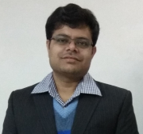

|

|
|
Staff Data Scientist
Walmart Global Tech
SMIEEE, SMACM
| Address: |
Walmart Labs
Pardhanani Wishire II, Cessna Business Park
Kadubeesanahalli, Varthur Hobli, Outer Ring Road
Bengaluru, Karnataka, India - 560103
|
| Email: |
kunal [dot] banerjee1 [at] walmart [dot] com
[CV]
|
|